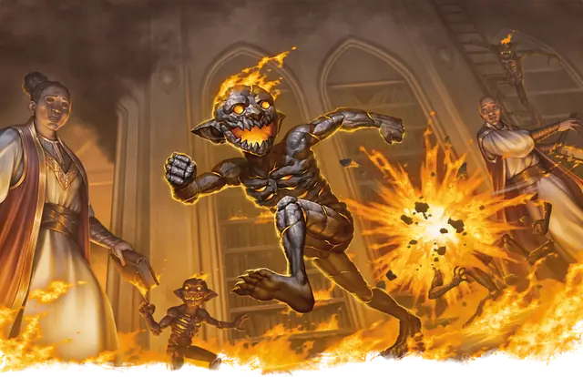

Магмин
Magmin
Маленький Элементаль, Хаотичный Нейтральный

Класс Защиты 14 Инициатива +2 (12)
Хиты 13 (3к6 + 3)
Скорость 30 футов
| мод | спас | ||
|---|---|---|---|
| СИЛ | 7 | −2 | −2 |
| ЛОВ | 15 | +2 | +2 |
| ТЕЛ | 12 | +1 | +1 |
| мод | спас | ||
|---|---|---|---|
| ИНТ | 8 | −1 | −1 |
| МДР | 11 | +0 | +0 |
| ХАР | 10 | +0 | +0 |
Иммунитеты Огонь
Чувства Тёмное зрение 60 футов, пассивное Восприятие 10
Языки Первичный (Игнан)
Опасность 1/2 (100 опыта; БВ +2)
Особенности
Предсмертная вспышка. Когда магмин умирает, он взрывается. Спасбросок Ловкости: Сл 11, каждое существо в 10-футовой Эманации, распространяющейся от магмина. Провал: 7 (2к6) урона Огнём. Успех: Только половина урона.
Действия
Касание. Бросок рукопашной атаки: +4, досягаемость 5 фт. Попадание: 7 (2к4 + 2) урона Огнём. Если цель — существо или горючий объект, который никто не несёт и не носит, она начинает гореть.
Бонусные действия
Свечение от горения. Магмин вспыхивает или тушит свое пламя. Пока магмин горит, он испускает Яркий свет в радиусе 10 футов и Тусклый свет в радиусе еще 10 футов.
Бонус мастерства +2
Среда обитания Стихийный план Огня
Сокровища Отсутствуют